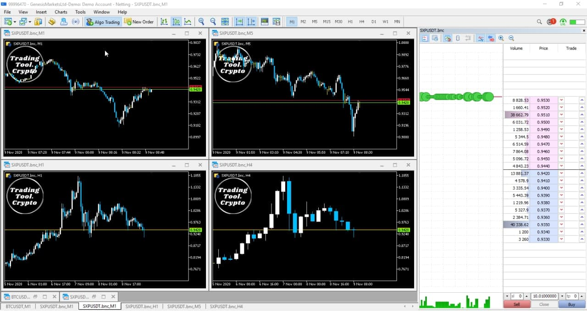

Crypto Charts Package
The crypto charting package for MetaTrader (MT5) includes real time updated orderbooks, tick data, and candle stick bars on all timeframes (M1-Monthly). All the Historical data from the exchanges can be downloaded into Metatrader for technical analysis and backtesting strategies within the built in Strategy Tester. The historical crypto chart data can also be exported from MetaTrader into CSV format for later storage or use.
Supported Crypto Exchanges
- Binance
- Binance Futures
- Binance US
- Bitmex
- BTSE
- Bybit
- Coinbase
- Deribit
- Digitex
- FTX
- Huobi Global
- Kraken
- Kucoin
- Kucoin Futures
- Phemex
- Satang Pro
- ZBG
Features
- All Symbols supported from all exchanges
- Real Time Charting for all Time-frames
- Real Time Orderbooks with 10 Levels of Liquidity
- Creates Tick Database from orderbook snapshot
- Download all historical data and export via CSV
- Backtesting of robots and indicators
Highlights
- High Quality M1 data directly from exchanges
- Higher Timeframes built from M1 data
- Select any Start Date
The Crypto Charts Plugin for MetaTrader 5 collects one minute data (M1) from the exchanges via REST Api. Once the data is retrieved into MT5, the platform creates all higher time-frame charts automatically based on the M1 data providing accurate and high quality charting data. All opened charts regardless of the time-frame will update automatically in real-time. The Crypto Charts MT5 plugin powers all the higher time-frames simultaneously from one robot which means, you only need one robot per market.